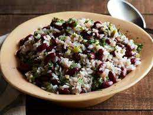

Read Beans and Rice
Red beans and rice is a cheap and easy meal great for any family.

Ingredients
- 1 can of Kidney Beans
- 1/2 package of Johnson Bratwurst
- 1/2 can of rotel
- 1 cup uncooked rice
- 2 cups water
- salt & pepper
Steps
- Add rice and water to rice cooker and start it.
- While rice is cooking, pull casing off brats and cook ground up.
- Once rice and brats are cooked, combine kidney beans, brats, rice, and rotel into 1 bowl. Mix thoughly
- salt and pepper to taste